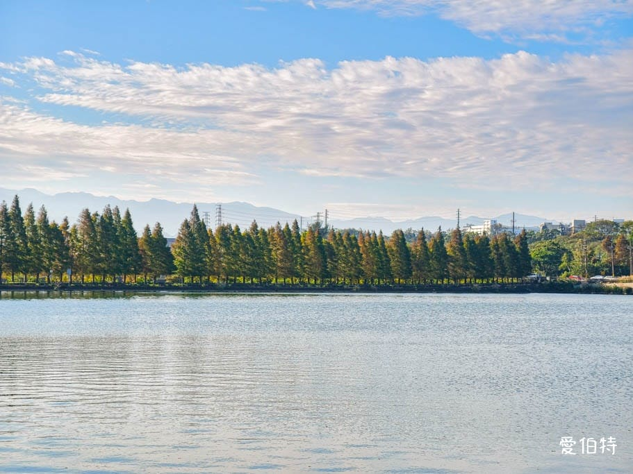
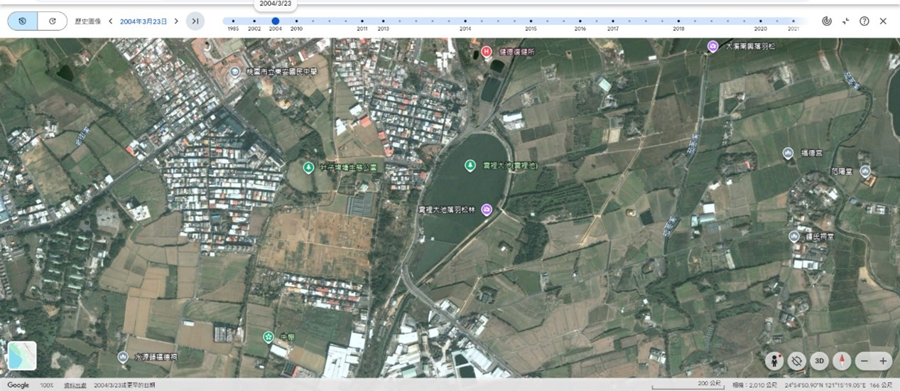
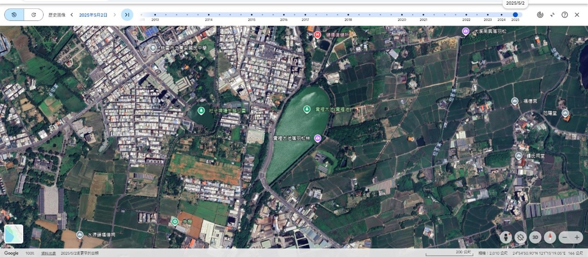
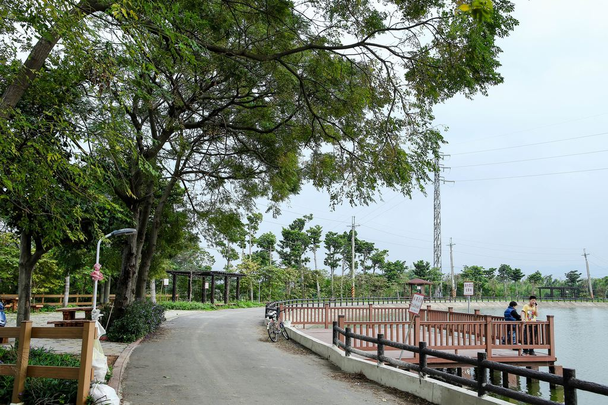
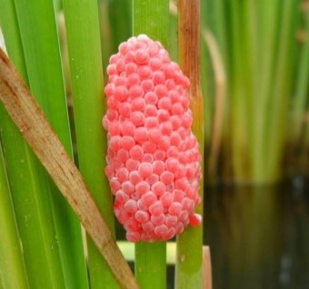

地景描述與埤塘簡介
霄裡大池（亦稱霄裡池）坐落於桃園市八德區與大溪區的交界地帶，是千塘之鄉桃園極具歷史代表性的超大型埤塘。自清代乾隆六年（1741年）由平埔族霄裡社通事知母六與漢人業戶薛奇隆攜手合作、集佃開鑿霄裡大圳並匯集天然湧泉形成「霄裡池」以來，它不僅是當地農業灌溉的核心命脈，更在都市現代化轉型中扮演了不可或缺的生態綠肺與滯洪防汛角色。大池周邊因擁有源源不絕的天然地下湧泉，使其常年波光粼粼、蓄水充沛，秋冬時節湖畔成排的落羽松林逐漸轉為紅褐色，更是名聞遐邇的觀光勝地。

圖片來源：愛伯特部落格
變遷與現狀（社會責任）
土地利用：20年來的地景劇變
透過 Google Earth 歷史衛星圖的長期對比觀測可以發現，在20年前（約西元2000年前後），霄裡大池周邊幾乎全是一望無際的綠色水稻田、縱橫交錯的灌溉水路與零星點綴的傳統客家三合院聚落，展現純樸的典型農村生產地景。然而，隨著都市計畫擴大、交通路網建設以及都市化進程的劇烈推進，現今的大池周邊已被密集的現代化透天別墅聚落、新興住宅大樓與便利商店所取代。隨著落羽松景觀的爆紅，更增設了環湖景觀步道、木棧道、景觀咖啡廳與觀光停車場，土地利用型態已由純粹的「農業生產地景」深度轉化為「都市休閒與觀光住宅地景」。


歷史衛星地圖對比（2004年 - 2025年）
轉型功能：從農業到都市的多重角色
隨著時代推移，霄裡大池的功能並未因農業衰退而消失，而是成功進行了多重維度的現代化轉型：
- 灌溉功能（傳統承襲）： 至今仍保留部分蓄水，為周圍殘存的零星溫室蔬菜與稻田提供穩定的農用水源。
- 滯洪防災（現代都市功能）： 在極端氣候引發暴雨或颱風時，作為八德區關鍵的雨水調節池與蓄水滯洪空間，有效保護下游市區免於洪澇侵害。
- 休憩與環境教育（新興社會功能）： 轉型為埤塘生態公園，設置無障礙環湖自行車道與步道，成為社區居民散步、大學田野調查、以及中小學開展本土環境教育的親水核心基地。

圖片來源：桃園觀光導覽網
面臨挑戰：埤塘保育的現代難題
在成功轉型的背後，霄裡大池也正面臨著嚴峻的現代環境保育挑戰。首先是外來種全面入侵，水岸與水體中常年充斥著大量福壽螺（岸壁佈滿密集的粉紅色卵塊）、泰國鱧與吳郭魚，嚴重壓迫本土魚類與兩棲類的生存空間；其次是都市生活污水與水質優養化，周邊新興住宅增加導致部分未徹底納管的生活廢水滲入大池，加上水中氮、磷含量偏高，在夏季高溫時偶爾引發藻類大爆發與藍綠藻優養化現象；最後則是過度水泥化危機，過去自然的泥土防護岸與多孔隙草坡，在現代景觀工程中多被改建為堅固的水泥直立護岸，雖然增強了結構防護，卻徹底摧毀了水生昆蟲（如水蠆）與兩棲類的築巢與繁殖棲息空間。

圖片來源：搜狐網